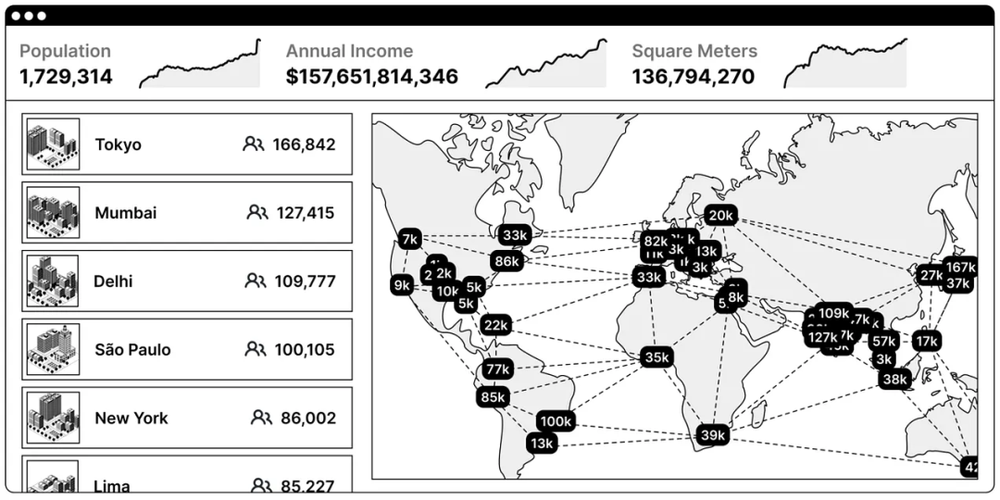

作者：Sterlin
原文：https://substack.com/@sterlinlujan/p-148209257
译者：定慧
版权声明：已获得转载授权
“Network State” 这一概念有着悠久的历史。大多数人知道它来自 Crypto 密码货币，由技术专家与投资人Balaji 提出，这部分正确。Balaji 创造了这个词并将其带入大众视野，然而这一想法的种子早在19世纪末就已经萌芽，直到近期才重新浮现。它曾被加密无政府主义者设想为一种技术产品，之后经由 Balaji 完善传播开来。
Network State的理念最早出现在19世纪鲜为人知的泛政体理论（Panarchy movement）中。早期，思想家们就相信治理模式应当可以被选择和替代的，以提供安全、防卫和管理服务。他们意识到，对于有效协调和维持社会秩序，并不存在一种通用的解决方案能够满足所有人。相反，他们希望通过将公共治理，视作市场上可以自由选择的服务，从而使其受供需关系的影响，赋予人们选择的权力。
在这个视角中，Network State 是一种结合了哲学、经济学与科技的治理实验，在建设一种新社会形态的愿景下，大杂烩般结合了多种进步思潮。各种为减少系统的治理腐败、暴力和无能的实践在这里集大成。它融汇了诗意的构想，并在技术发展之前便已开始萌芽。
这篇文章将描述并定义关于 Network State 的主要构想，详细探讨泛政体理论，并分析其运作方式。文章将剖析 Network State 的历史及其前身，包括加密无政府主义者 Timothy May 首次从技术角度阐明这一概念的论文。最后，我们将展望未来，理解“ 可编程的 Network State ”是如何在我们深度互联的社会之网中扩展、连接。
🚩 让我们先建立一些基础，从思考一些定义开始。
Anarkhia 安那其，加密无政府主义，Network State
Network State 理念与无政府主义哲学，特别是加密无政府主义，有着相似之处。
一些人听到无政府主义者，脑中浮现的是一群在街头游荡的杀马特精神小伙，骑着鬼火摩托大半夜炸街，还到处乱丢酒瓶。然而这种混沌与骚乱的印象并不准确，且会扭曲无政府主义的真正内涵。
无政府主义的字面意思是“without rulers”，源自希腊语的 anarkhia 安那其，前缀 An 表示“without”，后缀 arkhos 代表“ruler”。换句话说，无政府主义者不希望被迫使以某种方式生活，或屈服于某种“老板”或“主人”。Edward Abbey 在《A Voice Crying in the Wilderness》中简洁地表达了对无政府主义的见解：
无政府主义建立在一种观察上：只有很少的人能有效管理自己，而有智慧管理好他人者更是大海捞针。
对于“少数人具备足够的智慧去管理他人”这一事实，正是加密无政府主义者与极客们构思 Network State 时的出发点。但在进一步讨论前，我们需要理解什么是“加密无政府主义”。
加密无政府主义者运用计算机代码与技术手段，构建保护隐私、经济自由和政治权利的应用。他们致力于利用技术解放人类，并确保权威机构无法将类似技术作为压迫的工具。
因此，加密无政府主义者是通过技术干预与创新，来抵御大型系统的过度扩张。有关加密无政府主义者的历史和他们与传统权威的斗争，更多信息可参阅 Stephen Levy 的书，“Crypto: How the Code Rebels Beat the Government Saving Privacy in the Digital Age”
在这份理解上，我们可以来聊聊 Network State。这是 Balaji 的简洁定义：
“Network State是一个想象的共同体。订阅制公民们通过互联网互相连接，他们积累足够的资本、领土和政治影响力，以实现被公认为一个国家。因此，订阅制公民们通过选择与契约来‘订阅’其规则和发展方针，而非出于强迫。”
一个Network State在理论上可以被认可，即使它与其他国家并存，但这并不是必要条件。地理或政治上的边界并不会限制其成长。对Network State的一个关键理解是，相对于传统世界，它们不必具备强制性或强迫性，而是且应当是自愿选择的。Network State 的历史根植于哲学与政治，并不依赖技术。其最初的起源被称为“泛政体理论”。
然而，什么是泛政体理论？它从何而来，又是如何演变成Network State这一概念的？
De Puydt 的泛政体理论
1860 年，De Puydt 写出了他开创性却晦涩难懂的论文“Panarchy”，在其中，他写下了可考据的最早对于“拥有一个市场化治理/司法服务，以及互相重叠的行政区域”的正式论证。他将这种重叠的政治安排称为“laissez-faire, laissez-passer”，在法语中的意思分别是 “让事情顺其自然” 和 “让人自由通行” 。核心概念是人们可以生活在同一片土地或行政区域，却选择享受来自不同政府的服务。
De Puydt 在论文中详细阐述了这一概念：
“我的“灵丹妙药”（如果你允许我用这个词的话），其实非常简单，就是让政府的公共治理服务可以在市场中自由竞争。每个人都有权照顾好自己利益、偏好，获得自身情况下的安全。另一方面，这意味着政府通过互相竞争吸引追随者，并促进共同进步。全球层面真正的自由，不会去强迫任何人参与，而是每个人都获得了属于自己的自由。它既不压制也不欺骗，并且永远有申诉的权力。实现这样自由，无需放弃国家传统或家庭纽带，无需学习用新的语言思考，也无需跨越河流或海洋、带着祖先的遗骸远行。”
在他看来，所有泛政体将在一个共同的地区重叠存在，而该空间内的“公民”可以选择加入一个特定的治理服务，交会员费并遵守其规定。De Puydt 描绘了的画面是，政府将像市场上的公司一样进行竞争，并会像公司列出股东一样陈列“公民”。这一观点在当时是新颖的。但考虑到历史背景，不难理解像 De Puydt 这样有远见的人，会预见到这一概念带来颠覆式创新的潜力。
这一切设想发生在“旧制度”或“旧秩序”名誉扫地、分崩离析之时。自17世纪起，随着欧洲一系列政变的爆发，民主共和国开始取代中世纪僵化的君主制，并在19世纪末最终成形。De Puydt 生活在这一时代变革的巅峰，民族国家竞争理论和所谓的 “社会经济 ”理论，就是在那个时代打好了地基。
不过，“社会经济理论”是指什么？
自发秩序与泛政体
在泛政体的语境下，“社会经济”是指社会可以自发形成规则与边界，这与奥地利经济学家所称的“自发秩序”相吻合。只要市场没有被打乱，只要市场无干扰地运作，消费者或市场就能根据主观需求和欲望做出选择。
“价值的主观性”让市场可以大规模地涌现，并催生出治理服务的自由竞争。这一概念就是我们所说的“泛政体理论”。这其实在论证政府服务与市场上的其他服务并无本质区别，并且不同的服务可以共存于同一范围内。然而，尽管这一思想有着重要的历史意义，但泛政体理论作为一种技术变革并未在提出时立刻获得关注，直到一个世纪之后才开始发力。
在 20 世纪末， John Zube 通过他 1986 年撰写的短文《泛政体福音》重新提出了这一理念。随后在 1999 年，学者 Aviezer Tucker 发表了《超越领土谬误的最佳国家》一文。2015 年，他进一步在《泛政体：非领土国家的政治理论》一书中对这一思想进行了汇编和探讨。
在这些著作之前，虽然已有一些零星的相关作品出现，但它们的意义直到现代才真正展现出来。这一转折源于科技、加密无政府主义，以及通过区块链技术解决民族国家垄断问题，使泛政体成为可落地的想法。最早将泛政体视为一种技术解决方案的构想出现于 1992 年。
超越主权：Crypto Libertaria 与虚拟国家
自从 May 在《Libertaria in Cyberspace》中讨论类似的观点后，建立一个 Network State 以获得更大自由并减少物理世界的压迫，就成了加密无政府主义者讨论的焦点。
在那篇文章中他写道：
加密自由城邦（Crypto Libertaria）有一个极具说服力的优势：无论多少独立的“Nation”都可以同时存在。这允许我们进行快速实验、自我选择并演化。如果人们对某个虚拟社区感到厌倦，他们可以随时离开。由于加密特性，大家无从知晓其他成员在现实世界的身份、姓名，从而减少了物理上的强迫。
在他 1999 年发表的《Virtual States 虚拟国家》一书中，密码朋克 Jerry Everard 也通过福柯的哲学视角，探讨了这些理念和话语的形成。他分析了国家作为一种存在，与人们对其描述之间的相互关系。他认为国家的存在是对其臣民行使暴力的垄断。换句话说，国家享受这种与公民关系之间的不对等。
Everard 提出将民族国家解构为一系列元素，并设想在市场环境中自愿形成的“虚拟国家”将会是什么样子。他认为虚拟国家将接替国家机关去提供“商品和服务经济”（如泛政体所期望的那样）。长远来看，他认为国家不会再消失，只是不同领域权力会此消彼长。
他们反思了中世纪的“边界法”（March Law），即允许多个重叠司法管辖区共存的法律先例。在他们看来，边界法回归到一个更加去中介、去中心化的世界，指向数字世界中重叠交错的治理模式。书中的“超越国籍”章节提出了一个未来设想：单一的国籍将消失，迥然不同的和人或网络互相交融，并自由选择他们的国籍身份和治理服务。
再快进二十年，这些早期关于Network State的乌托邦式愿景，得到了更加完整且落地的表述。

技术专家、天使投资人、前 Coinbase CTO Balaji Srinivasan 先生充分完善了这个想法。
技术专家、天使投资人以及前 Coinbase 首席技术官 Balaji Srinivasan 对这一概念进行了全面阐述。他在 2022 年出版的书籍《he Network State: How to Start Your Own Country》中主要负责提出并完善了这一术语。书中详细描述了一种非领土性的组织形式，志同道合的人们可以通过设计一套公约，来共享、共建一个Network State，并分配其中的权力。Balaji 还为这一想法提出了一个复杂的定义：
Network State是一个社交网络：它具有道德创新、国家意识、公认的创始人、集体行动能力、具体到个人的文明程度、综合的加密货币、由社会智能合约所约束的共识政府、由众筹的实体领土组成的群岛、虚拟资本，以及一个链上的人口普查系统，以证明有足够多的人口、收入、不动产，进而获得一定程度的外交承认。
Balaji 的加密无政府主义阐述中，"道德创新"是实现 Network State 目标的基础。一个清晰的共识能够将理想主义者们凝聚在一起，避免内斗，让这份对人类未来的愿景更有被实现的可能。
在书中，他多次质疑传统民族国家天然对领土性和强制性的依赖。在相关章节中他写道：
“(State) refers to the entity that governs these people, that commands the police and the military, and that holds the monopoly of violence over the geographic area that the nation inhabits.”
Balaji 提出了 Frederick Jackson Turner 的“边疆论”的现代版本。他认为，历史上边疆总是开放的，无争议的的领土可以自由探索、实验和定居。在 Balaji 对该理论的现代诠释中，网络空间成为了加密无政府主义者挥洒创造力、蓬勃发展的新土壤。他主张只有通过这些新土壤上，才能确保更大的个人主权、建立更健全且资源参与的治理机制。
这种边疆论让人联想到 John Perry Barlo 著名的《网络空间独立宣言》，他在文中将网络空间比作一种名为自由的“病毒”用来规避不可抗力的栖息之地。
Barlow 的“自由病毒”很可能会随着 Network State 的扩展而不断传播。泛政体理论从出现到变身为“Network State”用了一个多世纪的时间，然而，Network State 的先驱们似乎并没有明确意识到“泛政体”是它的显而易见的前身。Timothy May 从未在他的作品中提及泛政体，而 Balaji 虽然在他的书中暗示了其概念，但从未深入探讨或分析这两个理念的共同特点。
不管怎样这两种观点都表明，我们正在通过技术将泛政体变成现实的边缘——特别是区块链和加密技术。加密无政府主义者或许能通过技术实现 Network State 的同时，实践 De Puydt 的哲学愿景。人们可以在不脱掉“睡袍或拖鞋”的情况下选择自己的治理服务。他说：
“只需简单的向当地的人民公仆们声明一下，(一个人就可以将自己选择的治理服务)，从共和国转变为君主国，从代议制转变为专制，从寡头制转变为民主，甚至转变为 Mr Proudhon 所说的无政府状态——而且甚至不需要脱下睡袍或拖鞋。”
最终，我们将进入一个完全可编程、自由选择的社会秩序——无政府与Network State的结合。这种治理模式能够实时、大规模地响应市场激励。订阅制公民可以选择自己所属的国家及律法。且其律法均可被编程和迭代，以适应动态的外在环境，并与其他互相重叠的网络进行交互。换句话说，治理成为了一种市场上可编程的便利设施。选择政府就像在镇上选一家杂货店或药房一样简单，无需离开自己的家乡。
结语：The Network School
这种信息化治理技术最为灵活，因为一群人即便持有不同观点，也能在分歧中和睦相处，揭竿而起、上梁山的流血行动变得不再必要。对于系统层面集权和过度干预的问题，泛政体也是最无政府又有治理存在的解决方案。它为人们提供多样选择，而不强迫他们接受某种政治立场、不会引发狂热的分裂情绪......它将活动家最大胆的梦想变成了现实。
近期，The Network School 在 Balaji 的筹划下在马来西亚开幕，证明了这改变未来的计划并非只是疯子、理想主义者或梦想家的幻梦。相反，它已经成为现实。
时间，将会向我们揭晓这一切将会如何改变未来。
Crypto: How the Code Rebels Beat the Government Saving Privacy in the Digital
Agehttps://www.academia.edu/4903403/Crypto_How_the_Code_Rebels_Beat_the_Government_Saving_Privacy_in_the_Digital_Age
《泛政体福音》 The Gospel of Panarchyhttps://www.panarchy.org/zube/gospel.1986.html
《超越领土谬误的最佳国家》The Best States Beyond the Territorial Fallacyhttps://www.panarchy.org/aviezer/territorialfallacy.html
《泛政体：非领土国家的政治理论》Panarchy：Political Theories of Non-Territorial Stateshttps://www.routledge.com/Panarchy-Political-Theories-of-Non-Territorial-States/Tucker-Bellis/p/book/9780815370598
Libertaria in Cyberspacehttps://nakamotoinstitute.org/library/libertaria-in-cyberspace/
Virtual States (The Internet and the Boundaries of the Nation State)https://www.amazon.com/Virtual-States-Internet-Boundaries-Nation/dp/0415172144